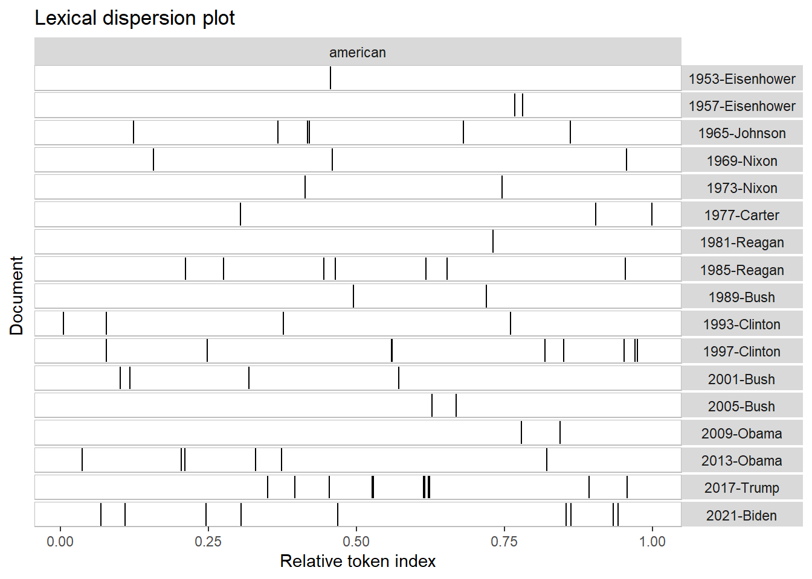

Quanteda is a family of packages that allows us to load text into R, create a corpus, then analyze the text1. There are several different packages, including:
quanteda: base package that allows us to load the text into R and create a corpus; I will explore this more in the exercise below.
quanteda.textmodels: allows us to create text models; this package is also explored more below.
quanteda.textstats: allows us to perform statistical analysis of text data
quanteda.textplots: allows us to plot text data
Basic steps for using quanteda’s text analysis tools in R.
Load quanteda packages and file you’d like to make your corpus.
Once your file is loaded, use either readtxt() or corpus() commands to create the corpus, depending on what type of file you are working with.
Now that the corpus is established, you have to tokenize2 it . You can use the command tokens() to tokenize your corpus. Tokens() also takes the arguments remove_numbers = TRUE/FALSE and remove_punct= TRUE/FALSE – it might prove more convenient to do this cleaning here. We want to create a separate dataframe for our tokenized text data – we always want our corpus to be a clean copy to refer back to!
3.b. I suppose that this is where you could also perform stemming/lemmatization (looks like the commands in quanteda are tokens_wordstem() and tokens_replace()…) however this process is not demonstrated in the example below. I can try to attempt it in a supplement to this assignment if I have enough time.
At this point, your new tokenized dataframe should be ready for different types of analysis. We’ll explore those in the exercise below.
Part 2: quanteda Exercise
Dr. Ho provided us with two samples of quanteda analysis. The first example was scraped Twitter data about the 2021 summit between President Joe Biden and General Secretary Xi Jinping. The second is an example from the quanteda website that utilizes American Presidents’ speeches. I’ll spend more time going through the step by step process for the first example, and primarily note the differences in techniques in the second example.
President Biden and General Secretary Ji Data
The first step is, of course, calling the appropriate libraries, followed by loading the scraped text that we would like to turn into our corpus.
Code
#Loading librarieslibrary(quanteda)library(quanteda.textmodels)library(quanteda.textplots)library(readr)library(ggplot2)#Reading csv into dataframesummit <-read_csv("https://raw.githubusercontent.com/datageneration/datamethods/master/textanalytics/summit_11162021.csv")#Quick check to make sure everything loaded in.View(summit)#Checking the class of summit.class(summit)
We can see that everything loaded appropriately. Our next step would be to select the pieces (or entire text) that we want our corpus to be, tokenize the selection, and save the tokenized text to a separate data frame.
Code
#We are selecting the text column from our summit dataframe to be our corpus.sum_twt = summit$text#Tokenizing the selection.toks =tokens(sum_twt)#Saving our tokenized data to a new dataframe.sumtwtdfm <-dfm(toks)
Latent Semantic Analysis
The next part of the sample text deals with Latent Semantic Analysis (LSA). We utilize the quanteda.textmodels library to perform LSA.
To the best of my understanding, LSA tries to find similarities between different documents by identifying relationships between the terms in a document. This means that a necessary step of LSA is creating a matrix for count of words that appear in a corpus (rows = documents, columns= keywords – see output).3
Code
#We use the textmodel_lsa command to to apply LSA to our tokenized corpus.sum_lsa <-textmodel_lsa(sumtwtdfm)#Summary of the output of our LSA process.summary(sum_lsa)
Length Class Mode
sk 10 -none- numeric
docs 145200 -none- numeric
features 160960 -none- numeric
matrix_low_rank 233713920 -none- numeric
data 233713920 dgCMatrix S4
Hashtag Analysis
The next part of the example shows us how to look at hashtags. We follow the same steps of creating a tokenized dataframe as above, but we include the remove_punct = TRUE argument in the tokens command.
We then use the dfm_select command to identify all hashtag and keyword combinations in the corpus. The next line of code selects the 50 top most occurring results and saves them to toptag, a dataframe. We then pull the top 10 records by order (not by count of occurrance) from the toptag dataframe by using the head command.
Code
#Taking the text column from our corpus, removing punctuation, tokenizing, and saving it to a new dataframe by using a pipe operator.tweet_dfm <-tokens(sum_twt, remove_punct =TRUE) %>%dfm()#Looking at the first results from the new dataframe tweet_dfm.head(tweet_dfm)
Document-feature matrix of: 6 documents, 16,029 features (99.89% sparse) and 0 docvars.
features
docs breaking news us president biden amp communist china leader xi
text1 1 1 1 1 1 1 1 2 1 1
text2 0 0 0 0 0 0 0 0 0 0
text3 0 0 0 0 1 0 0 0 0 1
text4 0 0 0 1 1 0 0 0 0 1
text5 0 0 0 0 1 0 0 0 0 1
text6 0 0 0 0 1 0 0 0 0 1
[ reached max_nfeat ... 16,019 more features ]
Code
#Selecting only words associated with hashtags from our tweet_dfm dataframe.tag_dfm <-dfm_select(tweet_dfm, pattern ="#*")#Selecting the top 50 tags from the hashtag results.toptag <-names(topfeatures(tag_dfm, 50))#Looking at the first ten results from our top tags.head(toptag, 10)
To create a visualization, we call the quanteda.textplots library. We then use the fcm() command to create a feature co-occurance matrix. This matrix shows us how often two words occur together in our corpus. Referring back to the concept of the LSA, if we can show co-occurrence, we might be able to tell if two documents in our corpus (in this dataset, our documents are Tweets) are related.
We apply the fcm command to our hashtag dataset, then specify that we only want the top tag results. We also set a limit on the minimum times that words must co-occur to be included in our new dataset. We then utilize textplot_network to create a network plot visualization of our FCM; see results below. This shows us which of the hashtags have a direct connection. The connecting lines get thicker with a higher count of co-occurrence.
Code
#Calling our visualization library.library("quanteda.textplots")#Creating the feature co-occurance matrix from the hastag data.tag_fcm <-fcm(tag_dfm)#Displys the first few instances in the FCM.head(tag_fcm)
#Selecting the co-occurances for the top 50 results of the hashtag dataset by count.topgat_fcm <-fcm_select(tag_fcm, pattern = toptag)#Using the library above to create a XYZ visualization of the co-occurances. Note that we are only including results with more than 50 occurances. Edge_aplha and Edge_size control ABC and XYZ respectively.textplot_network(topgat_fcm, min_freq =50, edge_alpha =0.8, edge_size =5)
User (@) Analysis
This second example of Twitter data uses very similar steps to the first, so I won’t go into as much detail here. We start with the tokenized text data with punctuation removed from the hashtag analysis, but instead of identifying the hashtag, we identify the user handle (using the @ symbol). Next, we create a list of the 50 most occurring handles. We then create an FCM for handles, and select the results for the 50 most occurring handles. Then, we create an network plot visualization of the handles’ co-occurrances.
The next part of the sample code Dr. Ho provided was an example of text analysis from the quanteda website. This example uses the quanteda.textstats library and a dataset from the library of inauguration speeches from American presidents. The first few lines call the library we use and gather a subset of the corpus (Year >1949). The keyword in context kwic() command is used – this will show you the surrounding words of the keyword of interest (in this case, american is the keyword we are looking for). This result is passed through to the textplot_xray() command, which creates an x-ray, or dispersion, plot4. This tracks how many times the keyword shows up in a text.
Code
#Calling the library.library(quanteda.textstats)#Creating a subset of the corpus -- only years greater than 1949.data_corpus_inaugural_subset <-corpus_subset(data_corpus_inaugural, Year >1949)kwic(tokens(data_corpus_inaugural_subset), pattern ="american") %>%textplot_xray()

The next x-ray plot shows us how many times that the keywords “american”, “people”, and “communist” show up in the speeches. Note that each keyword produces a separate visual.
Code
#Dispersion plots of three keywords.textplot_xray(kwic(data_corpus_inaugural_subset, pattern ="american"),kwic(data_corpus_inaugural_subset, pattern ="people"),kwic(data_corpus_inaugural_subset, pattern ="communist"))
Warning: 'kwic.corpus()' is deprecated. Use 'tokens()' first.
Warning: 'kwic.corpus()' is deprecated. Use 'tokens()' first.
Warning: 'kwic.corpus()' is deprecated. Use 'tokens()' first.
The final example is the dispersion plot, run for keywords in the tokenized Twitter data and with color added to the plot. This one takes a very long time to execute, and the results aren’t great. I made a copy of the exercise with the inaugural data instead.
Warning: 'kwic.corpus()' is deprecated. Use 'tokens()' first.
Warning: 'kwic.corpus()' is deprecated. Use 'tokens()' first.
Warning: 'kwic.corpus()' is deprecated. Use 'tokens()' first.
Code
g +aes(color = keyword) +scale_color_manual(values =c("blue", "red", "green")) +theme(legend.position ="none")
Code
g
Code
h +aes(color = keyword) +scale_color_manual(values =c("blue", "red", "green")) +theme(legend.position ="none")
Code
h
Part 3: What is Wordfish?
From the quanteda website:
Wordfish is a Poisson scaling model of one-dimensional document positions (Slapin and Proksch 2008).
Wordfish also allows for scaling documents, but in comparison to Wordscores, reference scores/texts are not required. Wordfish is an unsupervised one-dimensional text scaling method, meaning that it estimates the positions of documents solely based on the observed word frequencies.
I’m not going to lie…that makes zero sense to me right now. So let’s try to break it down I guess.
Poisson: number of events or occurrences in a fixed time and space, given a known average rate of occurrence (thanks Chat GPT).
Poisson scaling model: a model that you can use when one or more variable has Poisson distribution. How do changes in an input change the Poisson distribution?
One dimensional document: linear, sequential document (not multidimensional – no hyperlinks, interactive feature, multimedia, etc.) Maybe think text document.
Scaling documents (Wordscores is mentioned): refers to the process of assessing or quantifying the sentiment or valence of a document or text (thanks again Chat GPT).
Unsupervised, one dimensional scaling method: unsupervised – no labels assigned to data to begin with; algortihm is looking for patterns that exist naturally in the data. One dimensional scaling method: able to assess sentiment of a text document.
Final guess
I think that Wordfish is a tool that allows us to approximate the sentiment of different documents in a corpus using unsupervised learning techniques and scaling methods appropriate for Poisson distributed text . Does this mean if we have a corpus of documents from a specific place and time, we can anticipate the sentiment?
“[In a dispersion plot] each stripe represents an instance of a word, and each row represents the entire text.” https://www.nltk.org/book_1ed/ch01.html↩︎
Source Code
---title: "Homework 3"author: "Olivia Wilson-Pietrzak"format: html: code-fold: true code-tools: true---# Part 1: What is quanteda?Quanteda is a family of packages that allows us to load text into R, create a corpus, then analyze the text[^1]. There are several different packages, including:[^1]: "Quick Start Guide", *Quanteda*. https://quanteda.io/articles/quickstart.html- **quanteda**: base package that allows us to load the text into R and create a corpus; I will explore this more in the exercise below.- **quanteda.textmodels**: allows us to create text models; this package is also explored more below.- **quanteda.textstats**: allows us to perform statistical analysis of text data- **quanteda.textplots**: allows us to plot text data## Basic steps for using quanteda's text analysis tools in R.1. Load quanteda packages and file you'd like to make your corpus.2. Once your file is loaded, use either *readtxt()* or *corpus()* commands to create the corpus, depending on what type of file you are working with.3. Now that the corpus is established, you have to tokenize[^2] it . You can use the command *tokens()* to tokenize your corpus. *Tokens()* also takes the arguments *remove_numbers = TRUE/FALSE* and *remove_punct= TRUE/FALSE --* it might prove more convenient to do this cleaning here. We want to create a separate dataframe for our tokenized text data -- we always want our corpus to be a clean copy to refer back to! 3.b. I suppose that this is where you could also perform stemming/lemmatization (looks like the commands in quanteda are *tokens_wordstem()* and *tokens_replace()*...) however this process is not demonstrated in the example below. I can try to attempt it in a supplement to this assignment if I have enough time.4. At this point, your new tokenized dataframe should be ready for different types of analysis. We'll explore those in the exercise below.[^2]: Remember: tokenizing is how we break apart the text to process it. You could tokenize your text by words, sentences, or characters------------------------------------------------------------------------# Part 2: quanteda ExerciseDr. Ho provided us with two samples of quanteda analysis. The first example was scraped Twitter data about the 2021 summit between President Joe Biden and General Secretary Xi Jinping. The second is an example from the quanteda website that utilizes American Presidents' speeches. I'll spend more time going through the step by step process for the first example, and primarily note the differences in techniques in the second example.## President Biden and General Secretary Ji DataThe first step is, of course, calling the appropriate libraries, followed by loading the scraped text that we would like to turn into our corpus.```{r, message = FALSE, results = 'hide'}#Loading librarieslibrary(quanteda)library(quanteda.textmodels)library(quanteda.textplots)library(readr)library(ggplot2)#Reading csv into dataframesummit <-read_csv("https://raw.githubusercontent.com/datageneration/datamethods/master/textanalytics/summit_11162021.csv")#Quick check to make sure everything loaded in.View(summit)#Checking the class of summit.class(summit)```We can see that everything loaded appropriately. Our next step would be to select the pieces (or entire text) that we want our corpus to be, tokenize the selection, and save the tokenized text to a separate data frame.```{r}#We are selecting the text column from our summit dataframe to be our corpus.sum_twt = summit$text#Tokenizing the selection.toks =tokens(sum_twt)#Saving our tokenized data to a new dataframe.sumtwtdfm <-dfm(toks)```### Latent Semantic AnalysisThe next part of the sample text deals with Latent Semantic Analysis (LSA). We utilize the *quanteda.textmodels* library to perform LSA.To the best of my understanding, LSA tries to find similarities between different documents by identifying relationships between the terms in a document. This means that a necessary step of LSA is creating a matrix for count of words that appear in a corpus (rows = documents, columns= keywords -- see output).[^3][^3]: "Latent Semantic Analysis", *Wikipedia*. https://en.wikipedia.org/wiki/Latent_semantic_analysis```{r, Latent Semantic Analysis}#We use the textmodel_lsa command to to apply LSA to our tokenized corpus.sum_lsa <-textmodel_lsa(sumtwtdfm)#Summary of the output of our LSA process.summary(sum_lsa)```### Hashtag AnalysisThe next part of the example shows us how to look at hashtags. We follow the same steps of creating a tokenized dataframe as above, but we include the *remove_punct = TRUE* argument in the *tokens* command.We then use the dfm_select command to identify all hashtag and keyword combinations in the corpus. The next line of code selects the 50 top most occurring results and saves them to toptag, a dataframe. We then pull the top 10 records by order (not by count of occurrance) from the toptag dataframe by using the *head* command.```{r, Hashtag Example}#Taking the text column from our corpus, removing punctuation, tokenizing, and saving it to a new dataframe by using a pipe operator.tweet_dfm <-tokens(sum_twt, remove_punct =TRUE) %>%dfm()#Looking at the first results from the new dataframe tweet_dfm.head(tweet_dfm)#Selecting only words associated with hashtags from our tweet_dfm dataframe.tag_dfm <-dfm_select(tweet_dfm, pattern ="#*")#Selecting the top 50 tags from the hashtag results.toptag <-names(topfeatures(tag_dfm, 50))#Looking at the first ten results from our top tags.head(toptag, 10)```### VisualizationTo create a visualization, we call the quanteda.textplots library. We then use the *fcm()* command to create a feature co-occurance matrix. This matrix shows us how often two words occur together in our corpus. Referring back to the concept of the LSA, if we can show co-occurrence, we might be able to tell if two documents in our corpus (in this dataset, our documents are Tweets) are related.We apply the fcm command to our hashtag dataset, then specify that we only want the top tag results. We also set a limit on the minimum times that words must co-occur to be included in our new dataset. We then utilize textplot_network to create a network plot visualization of our FCM; see results below. This shows us which of the hashtags have a direct connection. The connecting lines get thicker with a higher count of co-occurrence.```{r, Visualizing Hashtag Co-Occurance, message = FALSE}#Calling our visualization library.library("quanteda.textplots")#Creating the feature co-occurance matrix from the hastag data.tag_fcm <-fcm(tag_dfm)#Displys the first few instances in the FCM.head(tag_fcm)#Selecting the co-occurances for the top 50 results of the hashtag dataset by count.topgat_fcm <-fcm_select(tag_fcm, pattern = toptag)#Using the library above to create a XYZ visualization of the co-occurances. Note that we are only including results with more than 50 occurances. Edge_aplha and Edge_size control ABC and XYZ respectively.textplot_network(topgat_fcm, min_freq =50, edge_alpha =0.8, edge_size =5)```### User (\@) AnalysisThis second example of Twitter data uses very similar steps to the first, so I won't go into as much detail here. We start with the tokenized text data with punctuation removed from the hashtag analysis, but instead of identifying the hashtag, we identify the user handle (using the @ symbol). Next, we create a list of the 50 most occurring handles. We then create an FCM for handles, and select the results for the 50 most occurring handles. Then, we create an network plot visualization of the handles' co-occurrances.```{r, User Analysis}user_dfm <-dfm_select(tweet_dfm, pattern ="@*")topuser <-names(topfeatures(user_dfm, 50))head(topuser, 20)user_fcm <-fcm(user_dfm)head(user_fcm, 20)View(user_fcm)user_fcm <-fcm_select(user_fcm, pattern = topuser)textplot_network(user_fcm, min_freq =20, edge_color ="firebrick", edge_alpha =0.8, edge_size =5)```## American Presidential SpeechesThe next part of the sample code Dr. Ho provided was an example of text analysis from the quanteda website. This example uses the *quanteda.textstats* library and a dataset from the library of inauguration speeches from American presidents. The first few lines call the library we use and gather a subset of the corpus (Year \>1949). The keyword in context *kwic()* command is used -- this will show you the surrounding words of the keyword of interest (in this case, american is the keyword we are looking for). This result is passed through to the *textplot_xray()* command, which creates an x-ray, or dispersion, plot[^4]. This tracks how many times the keyword shows up in a text.[^4]: "\[In a dispersion plot\] each stripe represents an instance of a word, and each row represents the entire text." https://www.nltk.org/book_1ed/ch01.html```{r, message = 'hide'}#Calling the library.library(quanteda.textstats)#Creating a subset of the corpus -- only years greater than 1949.data_corpus_inaugural_subset <-corpus_subset(data_corpus_inaugural, Year >1949)kwic(tokens(data_corpus_inaugural_subset), pattern ="american") %>%textplot_xray()```The next x-ray plot shows us how many times that the keywords "american", "people", and "communist" show up in the speeches. Note that each keyword produces a separate visual.```{r, Dispersion Plot with 3 Keywords}#Dispersion plots of three keywords.textplot_xray(kwic(data_corpus_inaugural_subset, pattern ="american"),kwic(data_corpus_inaugural_subset, pattern ="people"),kwic(data_corpus_inaugural_subset, pattern ="communist"))```The final example is the dispersion plot, run for keywords in the tokenized Twitter data and with color added to the plot. This one takes a very long time to execute, and the results aren't great. I made a copy of the exercise with the inaugural data instead.```{r, Dispersion Plot Three Keywords and Color -- Tokenized Twitter Data, message = 'hide'}theme_set(theme_bw())g <-textplot_xray(kwic(toks, pattern ="american"),kwic(toks, pattern ="people"),kwic(toks, pattern ="communist"))theme_set(theme_bw())h <-textplot_xray(kwic(data_corpus_inaugural_subset, pattern ="american"),kwic(data_corpus_inaugural_subset, pattern ="people"),kwic(data_corpus_inaugural_subset, pattern ="communist"))g +aes(color = keyword) +scale_color_manual(values =c("blue", "red", "green")) +theme(legend.position ="none")gh +aes(color = keyword) +scale_color_manual(values =c("blue", "red", "green")) +theme(legend.position ="none")h```------------------------------------------------------------------------# Part 3: What is Wordfish?From the quanteda website:> Wordfish is a Poisson scaling model of one-dimensional document positions (Slapin and Proksch 2008).>> Wordfish also allows for scaling documents, but in comparison to Wordscores, reference scores/texts are not required. Wordfish is an unsupervised one-dimensional text scaling method, meaning that it estimates the positions of documents solely based on the observed word frequencies.I'm not going to lie...that makes zero sense to me right now. So let's try to break it down I guess.Poisson: number of events or occurrences in a fixed time and space, given a known average rate of occurrence (thanks Chat GPT).Poisson scaling model: a model that you can use when one or more variable has Poisson distribution. *How do changes in an input change the Poisson distribution?*One dimensional document: linear, sequential document (not multidimensional -- no hyperlinks, interactive feature, multimedia, etc.) Maybe think text document.Scaling documents (Wordscores is mentioned): refers to the process of assessing or quantifying the sentiment or valence of a document or text (thanks again Chat GPT).Unsupervised, one dimensional scaling method: unsupervised -- no labels assigned to data to begin with; algortihm is looking for patterns that exist naturally in the data. One dimensional scaling method: able to assess sentiment of a text document.### Final guessI think that Wordfish is a tool that allows us to approximate the sentiment of different documents in a corpus using unsupervised learning techniques and scaling methods appropriate for Poisson distributed text . Does this mean if we have a corpus of documents from a specific place and time, we can anticipate the sentiment?